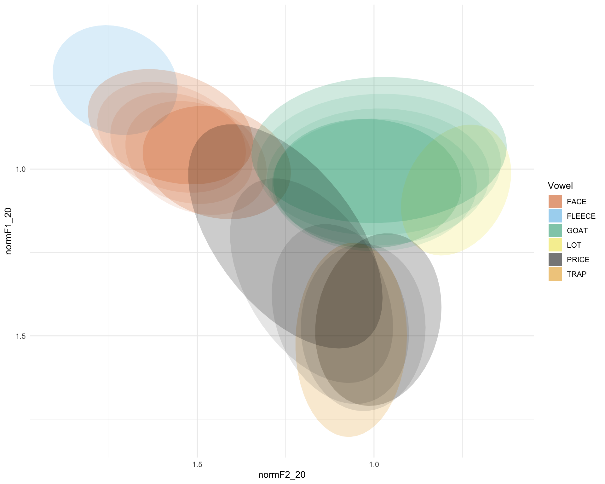

ICPhS 2019: vowel plot
Rosie Oxbury
10/08/2019
1 Introduction
This notebook provides the code for the vowel plot that was shown on Oxbury & McCarthy’s ICPhS poster.

2 Data cleaning & preparation
As a first step, of course, load tidyverse.
library(tidyverse)## ── Attaching packages ────────────────────────────── tidyverse 1.2.1 ──## ✔ ggplot2 3.2.0 ✔ purrr 0.3.2
## ✔ tibble 2.1.1 ✔ dplyr 0.8.1
## ✔ tidyr 0.8.3 ✔ stringr 1.4.0
## ✔ readr 1.3.1 ✔ forcats 0.4.0## ── Conflicts ───────────────────────────────── tidyverse_conflicts() ──
## ✖ dplyr::filter() masks stats::filter()
## ✖ dplyr::lag() masks stats::lag()Load in the data
data <- read_csv("icphs_data.csv")## Parsed with column specification:
## cols(
## .default = col_double(),
## participant = col_character(),
## sound_label = col_character(),
## word = col_character(),
## task = col_character(),
## age = col_character(),
## gender = col_character(),
## rol.var = col_character(),
## face.l = col_character(),
## price.l = col_character()
## )## See spec(...) for full column specifications.Make a grouping variable.
data <- data %>% mutate(
group = ifelse(
gender=="M" & age=="child", "Ch_M", ifelse(
gender=="M" & age=="adolescent", "Ad_M", ifelse(
gender=="F" & age=="child", "Ch_F", "Ad_F"
)
)
)
)Check that it worked
table(data$group)##
## Ad_F Ad_M Ch_F Ch_M
## 2466 1759 2048 2282Convert sound_label to a factor
data$sound_label <- as.factor(data$sound_label)Check levels
levels(data$sound_label)## [1] "dress" "face" "fleece" "foot" "goat" "goose" "kit"
## [8] "lot" "mouth" "price" "start" "strut" "trap"But we don’t want all of these vowels. We will create a vector of the names of the vowels we are interested in – the diphthongs FACE, PRICE and GOAT, and the reference vowels FLEECE, LOT and TRAP – so that then we can subset these out.
vowels <- c("face",
"fleece",
"goat",
"lot",
"price",
"trap")Now create the subset:
sub_data <- data %>% filter(sound_label %in% vowels)Check that this worked:
table(sub_data$sound_label)##
## dress face fleece foot goat goose kit lot mouth price
## 0 1937 304 0 2076 0 0 296 0 3106
## start strut trap
## 0 0 293Rename sound_label as Vowel – that is what it should be called!
sub_data <- sub_data %>%
rename(
Vowel = sound_label
)And rename the levels of “Vowel” so that they are in capitals. First, check what the levels are at present:
levels(sub_data$Vowel)## [1] "dress" "face" "fleece" "foot" "goat" "goose" "kit"
## [8] "lot" "mouth" "price" "start" "strut" "trap"And then rename these:
levels(sub_data$Vowel) <- c("dress",
"FACE",
"FLEECE",
"foot",
"GOAT",
"goose",
"kit",
"LOT",
"mouth",
"PRICE",
"start",
"strut",
"TRAP")3 Plotting
First of all, define a colourblind friendly palette:
cbbPalette <- c("#D55E00", "#56B4E9", "#009E73", "#F0E442", "#000000", "#E69F00")Create an initial plot of just ellipses:
a <- sub_data %>% ggplot(aes(x=normF2_20,
y=normF1_20,
group = Vowel,
color = Vowel,
fill = Vowel,
shape = gender,
linetype = age)) +
scale_x_reverse() +
scale_y_reverse() +
stat_ellipse(geom = "polygon",
alpha = 0.2,
linetype = 0,
level=0.67) +
theme_minimal() +
scale_fill_manual(values=cbbPalette) +
scale_colour_manual(values=cbbPalette)
aTry adding ellipses for diphthong finishing points
just.diph <- sub_data %>% filter(Vowel == "FACE" | Vowel == "PRICE" | Vowel == "GOAT")
b <- a + stat_ellipse(data = just.diph, aes(x=normF2_35, y=normF1_35), geom = "polygon", alpha = 0.1, linetype = 0, level=0.67) +
stat_ellipse(data = just.diph, aes(x=normF2_50, y=normF1_50), geom = "polygon", alpha = 0.1, linetype = 0, level=0.67) +
stat_ellipse(data = just.diph, aes(x=normF2_65, y=normF1_65), geom = "polygon", alpha = 0.1, linetype = 0, level=0.67) +
stat_ellipse(data = just.diph, aes(x=normF2_80, y=normF1_80), geom = "polygon", alpha = 0.2, linetype = 0, level=0.67)
b
Quite nice. we could add points to it
means <- sub_data %>%
group_by(Vowel, age, gender) %>%
summarise(meanF120 = mean(normF1_20), sdF120 = sd(normF1_20),
meanF135 = mean(normF1_35), sdF135 = sd(normF1_35),
meanF150 = mean(normF1_50), sdF150 = sd(normF1_50),
meanF165 = mean(normF1_65), sdF165 = sd(normF1_65),
meanF180 = mean(normF1_80), sdF180 = sd(normF1_80),
meanF220 = mean(normF2_20), sdF220 = sd(normF2_20),
meanF235 = mean(normF2_35), sdF235 = sd(normF2_35),
meanF250 = mean(normF2_50), sdF250 = sd(normF2_50),
meanF265 = mean(normF2_65), sdF265 = sd(normF2_65),
meanF280 = mean(normF2_80), sdF280 = sd(normF2_80)
)And means for the diphthongs
diph <- means %>% filter(Vowel == "FACE" | Vowel == "PRICE" | Vowel == "GOAT")Add these to the plot
c <- b + geom_point(data = means,
aes(x=meanF220,
y=meanF120), size = 4) +
geom_segment(data = diph,
aes(
x=meanF220,
y=meanF120,
xend=meanF235,
yend=meanF135
), size = 1) +
geom_segment(data = diph,
aes(
x=meanF235,
y=meanF135,
xend=meanF250,
yend=meanF150
), size = 1) +
geom_segment(data = diph,
aes(
x=meanF250,
y=meanF150,
xend=meanF265,
yend=meanF165
), size = 1) +
geom_segment(data = diph,
aes(
x=meanF265,
y=meanF165,
xend=meanF280,
yend=meanF180
), arrow = arrow(ends="last"), size = 1)
cAnd now let’s make the legends, titles etc neat
d <- c + theme(axis.title = element_text(size = rel(2)),
legend.title = element_blank(),
legend.text = element_text(size = rel(1)),
axis.text = element_text(size = rel(1))) +
scale_shape("Sex") +
labs(x = "Normalized F2",
y = "Normalized F1") +
scale_linetype("Age")
d